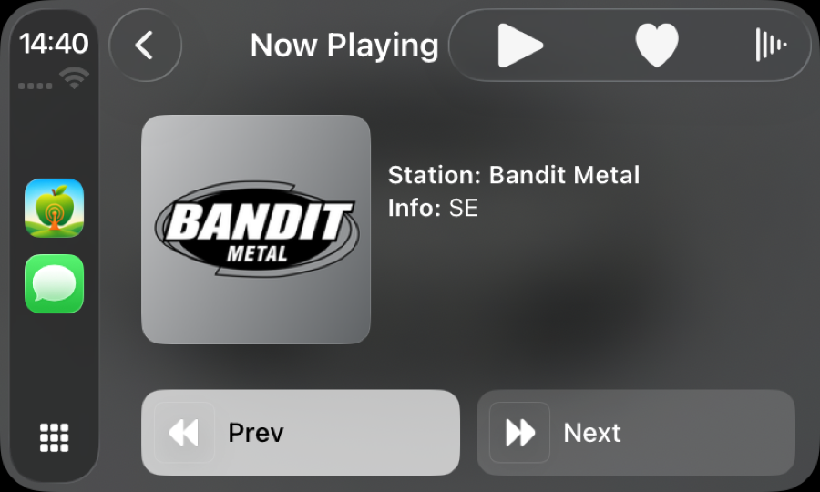
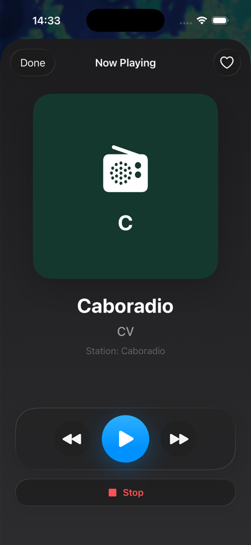
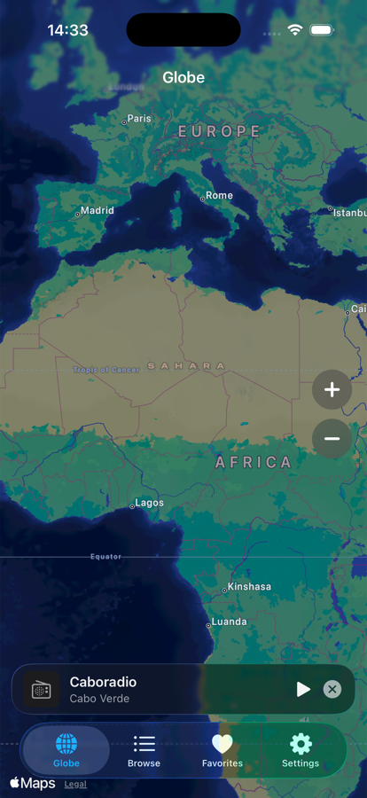

CarPlay favorites
Open saved stations from the in-car screen, with playback, favorite, previous, and next controls.
CarPlay-first live radio
A focused radio companion for the road: browse real stations, keep favorites close, and control playback from CarPlay without digging through the phone.


Built for listening
RadioBeam keeps the common radio workflow short: pick a country, choose a station, save favorites, and return to them quickly from CarPlay.
Open saved stations from the in-car screen, with playback, favorite, previous, and next controls.
Browse by continent and country, then sort and search stations by popularity or name.
When stations publish stream metadata, RadioBeam shows song and artist information with artwork where available.
Ads are limited to non-interrupting app surfaces and are never part of the CarPlay listening flow.
Preview
The iPhone app is the companion for discovery and setup. CarPlay stays focused on quick selection and playback.
